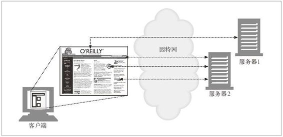

1.4 事务
我们来更仔细地看看客户端是怎样通过 HTTP 与 Web 服务器及其资源进行事务处理的。一个 HTTP 事务由一条（从客户端发往服务器的）请求命令和一个（从服务器发回客户端的）响应结果组成。这种通信是通过名为 HTTP 报文（HTTP message）的格式化数据块进行的，如图 1-5 所示。
图 1-5 包含请求及响应报文的 HTTP 事务
1.4.1 方法
HTTP 支持几种不同的请求命令，这些命令被称为 HTTP 方法（HTTP method）。每条 HTTP 请求报文都包含一个方法。这个方法会告诉服务器要执行什么动作（获取一个 Web 页面、运行一个网关程序、删除一个文件等）。表 1-2 列出了五种常见的 HTTP 方法。
表1-2 一些常见的HTTP方法
| HTTP方法 | 描 述 |
|---|---|
| GET | 从服务器向客户端发送命名资源 |
| PUT | 将来自客户端的数据存储到一个命名的服务器资源中去 |
| DELETE | 从服务器中删除命名资源 |
| POST | 将客户端数据发送到一个服务器网关应用程序 |
| HEAD | 仅发送命名资源响应中的HTTP 首部 |
我们会在第 3 章详细讨论 HTTP 方法。
1.4.2 状态码
每条 HTTP 响应报文返回时都会携带一个状态码。状态码是一个三位数字的代码，告知客户端请求是否成功，或者是否需要采取其他动作。表 1-3 显示了几种常见的状态码。
表1-3 一些常见的HTTP状态码
| HTTP状态码 | 描 述 |
|---|---|
| 200 | OK。文档正确返回 |
| 302 | Redirect（重定向）。到其他地方去获取资源 |
| 404 | Not Found（没找到）。无法找到这个资源 |
伴随着每个数字状态码，HTTP 还会发送一条解释性的“原因短语”文本（参见图 1-5 中的响应报文）。包含文本短语主要是为了进行描述，所有的处理过程使用的都是数字码。
HTTP 软件处理下列状态码和原因短语的方式是一样的。
200 OK
200 Document attached
200 Success
200 All's cool, dude
第 3 章详细解释了 HTTP 状态码。
1.4.3 Web页面中可以包含多个对象
应用程序完成一项任务时通常会发布多个 HTTP 事务。比如，Web 浏览器会发布一系列 HTTP 事务来获取并显示一个包含了丰富图片的 Web 页面。浏览器会执行一个事务来获取描述页面布局的 HTML“框架”，然后发布另外的 HTTP 事务来获取每个嵌入式图片、图像面板、Java 小程序等。这些嵌入式资源甚至可能位于不同的服务器上，如图 1-6 所示。因此，一个“Web 页面”通常并不是单个资源，而是一组资源的集合。

图 1-6 复合 Web 页面要为每个嵌入式资源使用一个单独的 HTTP 事务